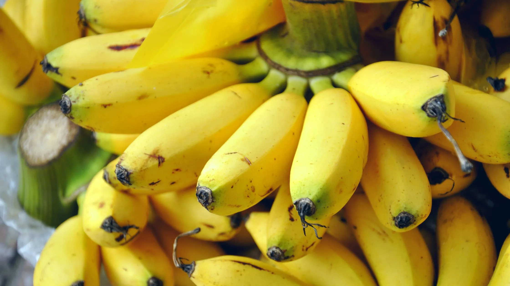
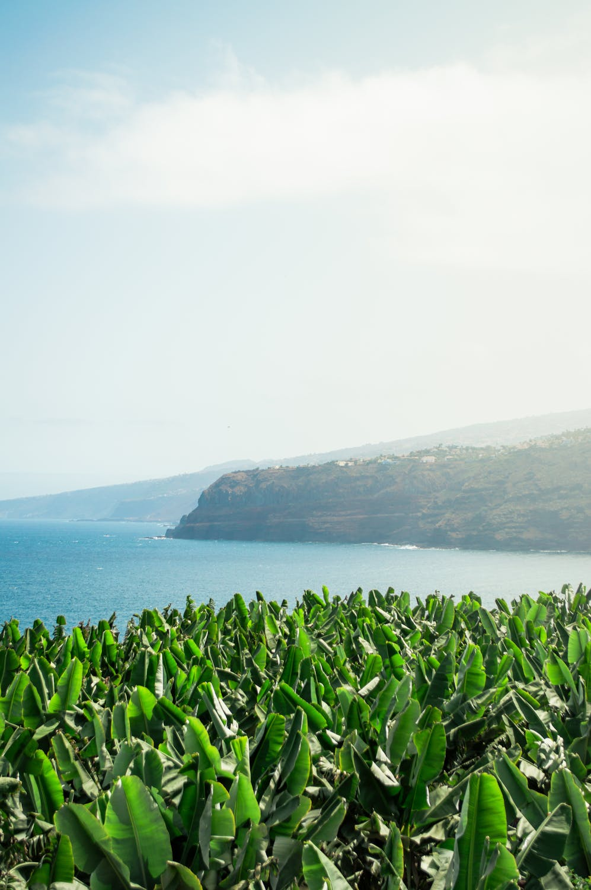

Nestled in the fertile landscapes of Nashik, Maharashtra, Diwate Farm has been cultivating premium quality bananas with dedication and care.
We specialize in the renowned Yellaki Keli variety (also known as Elaichi Keli),
grown organically to ensure natural sweetness and rich aroma.
Our commitment to sustainable farming and eco-friendly practices guarantees the freshest, healthiest bananas delivered straight to your table.
Diwanas
Premium Yellaki Keli from Diwate Farm, Nashik

Yellaki Keli
Grown in the fertile soils of Diwate Farm, Nashik, our Yellaki Keli is known
for its rich aroma, sweet taste, and smooth texture. Perfectly ripened,
chemical-free, and handpicked for the highest quality.
About Yellaki Keli (Elaichi Banana)
Yellaki Keli, commonly known as Elaichi Banana, is a premium banana variety cherished for its naturally sweet flavor and aromatic profile. Though small in size, it delivers a rich, tropical experience that sets it apart from regular bananas.
Origin & Cultivation: Mainly grown in South India and parts of Maharashtra like Nashik. It thrives in warm climates with fertile soil and takes about 10–12 months to mature.
Physical Traits: Small to medium-sized (3–5 inches), thin yellow peel, creamy and soft white flesh. Best consumed fresh.
Flavor: Naturally sweet with a distinct cardamom-like aroma — hence the name "Elaichi".
Health Benefits: High in potassium, rich in Vitamin C and B6, good for digestion, and free of cholesterol and fat.
Common Uses: Eaten raw, used in poojas, perfect for baby food, and great in smoothies and desserts.
Why It's Premium: Its delicate texture, exceptional taste, and lower yield make it a high-demand, premium product.
Why Choose Diwanas?
100% Natural & Organic Farming
Rich, Sweet Taste & Aroma
Carefully Harvested from Diwate Farm
Fresh from Nashik to Your Table
Eco-Friendly Packaging

Place Your Order
Click the button below to go to the order page and place your order easily!